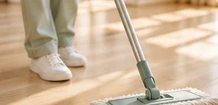
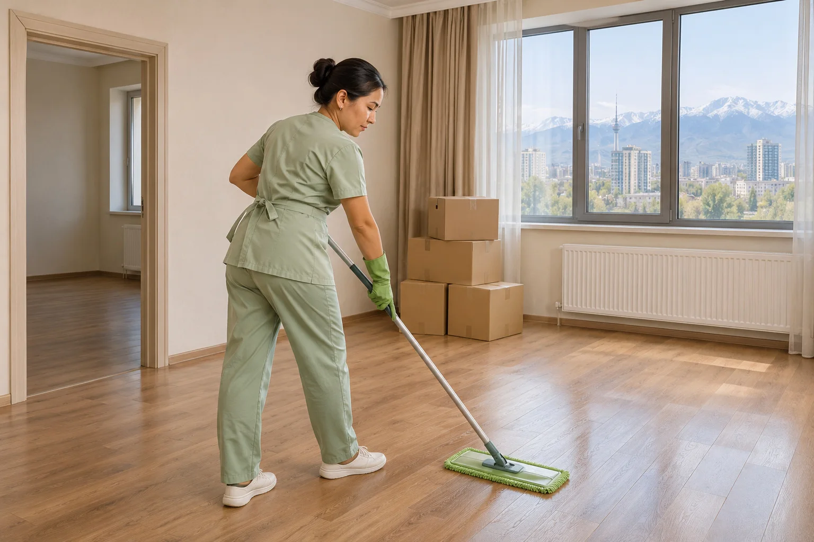

Күрделі тазалау
Асүйді, санитарлық торапты және бөлмелерді мұқият тазалаймыз. Бұрыштар мен қол жетуі қиын жерлерге де көңіл бөлеміз.
Қызметті таңдау · Күрделі тазалауҮй тазалау қызметі
Жөндеуден немесе жалға беруден кейін пәтерді ретке келтіреміз, еден мен жұмсақ жиһазды тазалаймыз.

Қажет қызметті таңдаңыз — ылғалды тазалаудан бастап, пәтерді жаңа тұрғындарға дайындауға дейін.
Асүйді, санитарлық торапты және бөлмелерді мұқият тазалаймыз. Бұрыштар мен қол жетуі қиын жерлерге де көңіл бөлеміз.
Қызметті таңдау · Күрделі тазалау
Көшіп кірер алдында құрылыс шаңын кетіріп, беттерді тазалаймыз.
Қызметті таңдау · Жөндеуден кейінгі тазалау
Пәтерді сергіту үшін еденді жуып, қолжетімді беттерді сүртеміз.
Қызметті таңдау · Ылғалды тазалауТұрғындар көшіп кеткеннен кейін пәтерді көрсетуге немесе жаңа тұрғындарға дайындаймыз.
Қызметті таңдау · Жалға алушылардан кейінгі тазалау
Жұмсақ жиһазды мата түрі мен ластану деңгейіне сай тазалаймыз.
Қызметті таңдау · Химиялық тазалауКөшкелі жатырсыз ба, әлде жаңа тұрғындарды күтіп жүрсіз бе? Пәтердің жағдайын талқылап, лайық тазалау түрін ұсынамыз.

Пәтердің шамамен ауданы мен не істеу керегінің қысқаша сипаттамасы керек.
Қажет қызметті көрсетіңіз немесе нені тазалау керегін сипаттаңыз.
Ауданын, жағдайын және ерекше көңіл бөлу керек жерлерді нақтылаймыз.
Жұмыс тізімін талқылап, ыңғайлы күнді таңдаймыз.
Ылғалды тазалау еден мен беттерді үнемі сүртіп тұруға қолайлы. Күрделі тазалауда қол жетуі қиын жерлер мен кетпей тұрған дақтарға көбірек уақыт бөлеміз.
Жалға алушылардан кейінгі тазалауды таңдап, келесі тұрғындар келерде нені дайындау керегін айтыңыз.
Қандай жиһазды тазалау керек екенін көрсетіңіз. Оны негізгі тазалаумен бірге келісеміз.
Телефон нөміріңізді қалдырып, қажетті қызмет пен пәтер ауданын көрсетіңіз.
Пәтер туралы айтып, қызметті таңдаңыз. Жұмыс көлемін келісіп, бағасын есептейміз.